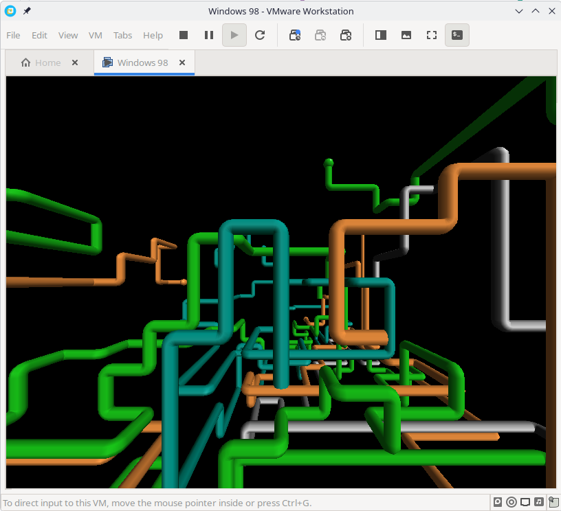
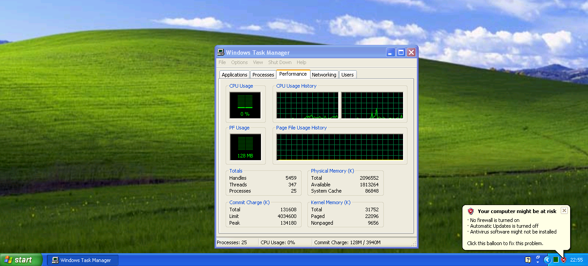
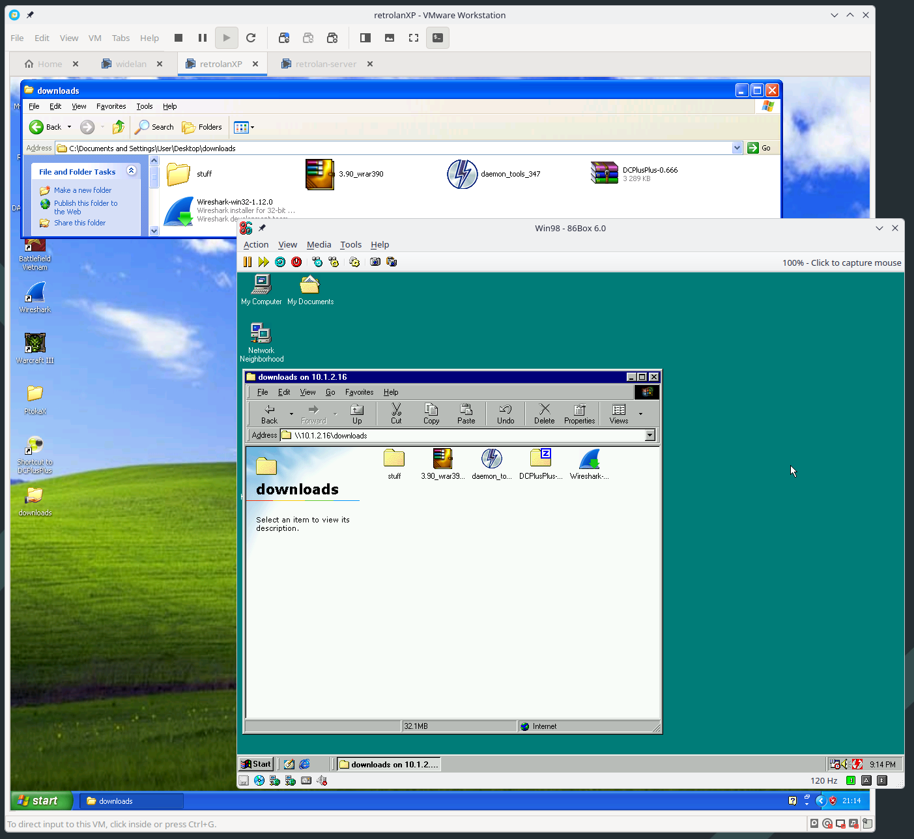

Retrolan 1: Virtual MMX
One of the things you get for free while passing through your 30s is an increasing sense of nostalgia. If you were also shaped by computering in the Y2K era, chances are you have fond memories of floppy drive noises, LAN parties, NoCD cracktros and not-quite-effortless file sharing.

Computers these days are faster. Orders of magnitude faster. Operating systems are more convenient. Applications are more accesible. The web is always-on and far more useful than it used to be. Although hardware costs are through the roof at the moment, computing is more accessible now than it was 30 years ago at least.
OK, great, but we miss something from back then, don't we? Well, let's build it! This is a series of posts about how to recreate some of that 2003 LAN party magic in the comfort of your 2026 hardware. We'll walk through creating a sick gaming virtual machine, then move on to programs and games and stuff and finally: Global LAN connectivity to your friends!
Requirements
I'll assume you're just like me: Pining for the Windows 98-XP era of computer gaming, but well familiar with modern Linux and stuff. You'll need an OK modern machine, but this can probably be done on an i7 from 2015 if that's what you happen to have available to you. Everything will be done with free (as in beer) or abandoned software, and free (as in liberty) wherever possible. Sorry about the compromise, we'll see how far we get.
Selecting a Hypervisor
This is part 1: Virtual MMX. Our goal for today is to set up two virtual machines: one running Windows 98 and one running Windows XP. They will have both have working sound, graphics and network support.
The first thing we need is a hypervisor. This is the virtualization host we'll use to run our bad-ass imaginary gaming rigs. Let's look at some contenders.
Libvirt (KVM/QEMU)
Libvirt has several strengths compared to the other alternatives. It's free and open-source, it's likely a first-rate member of your host distribution, and it rests on robust support in the mainline Linux kernel.
What this means is, you can install and set up Libvirt and a nice graphical front-end like virt-manager and it won't require installing any third-party kernel modules and stuff that will pollute your otherwise neatly managed system. Excellent.
For Windows 9x guests, Libvirt with QEMU supports the SoftGPU drivers, which should give you OK graphics performance.
qemu-3dfx is a set of patches and support drivers for QEMU which adds passthrough of GLIDE and OpenGL to the host for better 3D performance. I haven't been able to build it, but it seems like a good option. Be aware that there's some licensing drama in the project at the moment.
86Box
86Box is more of an emulator than a Hypervisor, really. It does a great job emulating all kinds of early to middle-age 8086, 286, 386, 486, Pentium and Pentium-2 machines. It's accurate all the way down to the BIOS, and it even allows you to add floppy drive sounds which is absolutely charming.
It supports a wide range of period-accurate peripherals such as sound, graphics and network cards.
Performance will suffer; my Ryzen 5950X has trouble running a 200MHz Pentium 2 at full speed. For that reason, 86Box is probably best reserved for older target machines. If you want a good host for your Windows 95 installation, 86Box is a good bet. If you want to play games that rely on specific hardware (say, Soundblaster Pro 2), that's also a point in favor of 86Box
Networking-wise, it supports both a nice transparent NAT (SLiRP) and connecting your VM to a bridge device which is useful for our endeavors.
VirtualBox
VirtualBox used to be the go-to for linux VMs, but it seems that our target period has fallen out of support.
For Win9x, SoftGPU is reported to work with VirtualBox, but the official driver packs have dropped support for Windows XP and 2000. As far as I can tell, this means we can't get 3D acceleration on XP.
Rumor has it hardware 3D acceleration should work with VirtualBox 6.x, but I haven't dared to try it.
VMware
VMware Workstation is free for personal use these days, which makes it feasible for our purposes. Compatibility is pretty great, and most importantly: Windows XP graphics drivers are still officially supported. I tried installing Windows XPSP3 in VMware Workstation 26 and it just works.
Networking is a bit messier in VMware than in other solutions, but you can set up a bridge for your retro VMs to network them together without connecting them to the Internet.
Compared to something like libvirt, VMware is a bit less integrated into the standard Linux experience. It installs some of its own kernel modules, but if you're lucky there are packages for your distribution so you can neatly upgrade or uninstall.
Choices, choices
For the XP machine, VMware will be my choice of hypervisor entirely due to the great driver support.
As for Windows 98, I'll try both VMWare (which appears to work well) and 86Box (for the greater accuracy, perhaps).
Installation
Windows 98SE
In VMware, I'd recommend choosing hardware compatibility "VMware Workstation 5.x". One CPU, 256MB of RAM, 12GB of disk space, good to go.
In 86Box, you've got a lot more choices. I've settled on the following, which seems to work well:
- Machine: [i440BX] ASUS P2B-LS
- CPU: Pentium II (Deschutes) / 166MHz
- Memory: 256MB
- Video: [AGP] 3dfx Voodoo3 1000
- Audio: [ISA16] Sound Blaster AWE32 PnP
- NIC: [ISA] Novell NE2000 (TAP)
It's important to set memory ranges and IRQ numbers for each device, such that they do not collide with each other. The joys of old-timey computing.
For the OS, we'll use the excellent Windows 98 Quick Install, which is a custom CD and installer for Windows 98 SE and a large set of drivers and fixes. Pop it into the VM's CD drive, add the boot floppy (if your BIOS can't boot from CD), and follow the installer steps.
This is roughly 300x faster than the official Windows 98 installer. Absolutely stunning work.
Once inside, open Control Panel / System / Device Manager and make sure all your devices have drivers.
We'll get to you.
For VMware, start by installing "VMware tools" from the menu. This includes video drivers and better mousing support. The sound card is an es1371 and needs Ensoniq drivers.

3D support working as intendedFor 86Box, the devices above aren't Plug-n-Play, so you'll have to select the device type manually when installing drivers. Win98QI includes a lot of drivers for common devices such as Sound Blaster, Voodoo and NE2000.
Windows XPSP3
This process is quite streamlined. Use the latest machine compatibility settings, give the machine 4GB of RAM and a couple of processors, 120GB of disk or so.
Install XPSP3 as you normally would, and activate it somehow. Install the VMware tools and presto!

SweetFinal words
OK, that's all it took to install some classic Windows OS versions on your fancy modern Linux machine.
There are benefits to using a single Hypervisor solution for all of your machines, but nothing prevents you from using linux Bridge devices to connect different ones together...
Next time: Connecting your little machines into a virtual LAN

Coexist! It's possible to bridge networks between different Hypervisors.